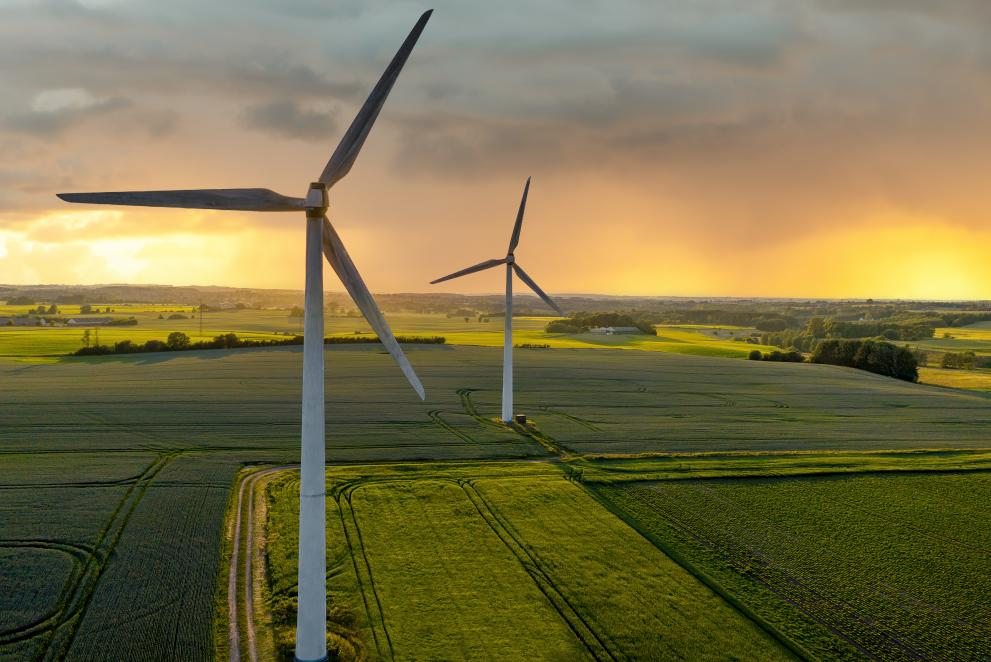
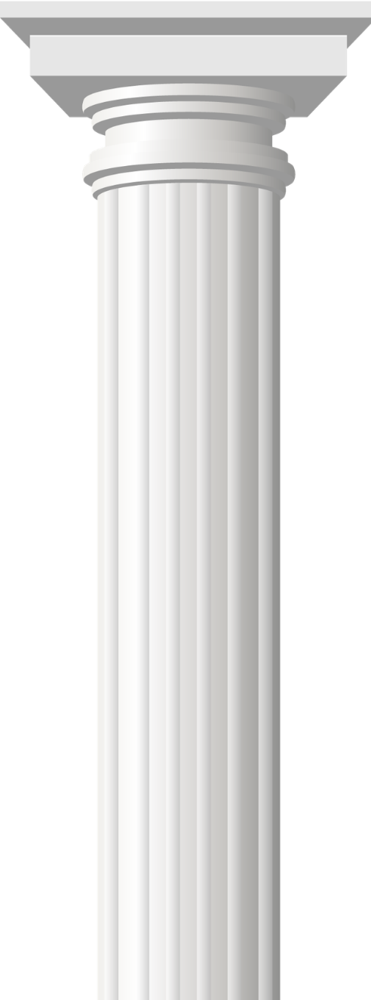

Pembangunan konvensional adalah usaha terencana untuk mendorong perkembangan kualitas kehidupan masyarakat dalam berbagai bidang. Beberapa contoh bidang seperti dalam bidang kesehatan (layanan kesehatan yang lebih baik, faslitas bersih, dll), pendidikan (edukasi berkualitas dan merata, semua sudah menerima pendidikan), dan berbagai contoh lainnya.
Sesuai dengan Pembukaan UUD 1945, tujuan pembangunan konvensional (bagi Indonesia) adalah melindungi segenap bangsa dan seluruh tumpah darah Indonesia, memajukan kesejahteraan umum dan mencerdaskan kehidupan bangsa, serta ikut melaksanakan ketertiban dunia berdasarkan kemerdekaan, perdamaian abadi, dan keadilan sosial.
Salah satu ciri-ciri dari pembangunan adalah pembangunan memilikitujuan untuk mengangkat perubahan demi kebaikan semua pihak. Suatu hal harus berubah menjadi hal yang lebih baik supaya bisa dipanggil "pembangunan".
Pembangunan harus fokus pada peningkatan kualitas hidup masyarakat. Hal ini bisa dalam berbagai bidang seperti pendidikan dan kesehatan. Peningkatan kualitas kesejahteraan ini bisa dilakukan secara materiil maupun spiritual.
Pembangunan harus bersifat terencana sebelum dilaksanakan supaya pelaksanaan dapat berjalan dengan lancar. Jika terjadi secara mendadak, hal itu bukan pembangunan karena tidak ada rencana sebelum pelaksanaan. Pembangunan juga harus dilakukan secara kontinu dan konsisten supaya efektif dan mencapai tujuan.
Jenis pembangunan ekonomi fokus pada peningkatan kualitas dan menjaga stabilitas ekonomi. Selain itu, jenis ini juga fokus pada produksi peningkatan produksi barang secara bijak dan jasa, investasi, tabungan, serta perdagangan (ekspor-impor).
Jenis ini fokus pada menjaga dan merawat alam, serta menggunakan SDA dengan bijak. Selain itu, jenis ini juga mencakupi kegiatan pertanian, perikanan, dan semua hal yang temasuk alam atau SDA.
Jenis ini fokus pada hal-hal yang berhubungan dengan fasilitas, inovasi, dan teknologi. Jenis ini juga mencakupi pembangunan fasilitas.
Pembangunan dapat berdampak baik pada lingkungan jika pembangunan tersebut bertujuan untuk menjaga dan Melestarikan lingkungan tersebut, serta menggunakan SDA secara bijak dan teratur.
Ada berbagai dampak negatif yang dapat dihasilkan oleh pembanungan bagi lingkungan. Pembangunan yang tidak bertanggung jawab berisiko mencemarkan lingkungan, naiknya kemungkinan bencana dan iklim, serta kerusakan ekosistem dan SDA.
Ada berbagai program yang fokus pada bidang ini. Dampak positif yang bisa didapatkan dari pembangungan dari perspektif sosial adalah peningkatan SDM melalui kesehatan dan pendidikan, mengurangi kesenjangan, dan partisipasi yang adil.
Ternyata, pembangunan juga membawa dampak negatif bagi bidang sosial. Pembangunan dapat mendorong relokasi dan perubahan mata pencaharian yang sulit untuk dilakukan oleh mayoritas orang. Jika pembangunan tidak dilakukan secara rata, pembangunan juga bisa menghasilkan kesenjangan sosial.
Pembangunan berkelanjutan merupakan pembangunan yang memenuhi kebutuhan generasi masa kini tanpa mengorbankan kemampuan generasi mendatang untuk memenuhi kebutuhannya. Dibanding dengan pembangunan, pembangunan berkelanjutan lebih fokus pada kebijakan penggunaan barang-barang dan sumber daya yang kami miliki saat ini, keseimbangan 3 pilar pembangunan berkelanjutan (ekonomi, sosial, lingkungan), serta keadilan antargenerasi; bagi generasi saat ini dan generasi yang mendatang.
SDGs berasal dari pembangunan berkelanjutan. SDGs memiliki tujuan utama untuk menjaga sumber daya pada masa ini supaya dapat digunakan pada masa yang mendatang. SDGs melakukan hal-hal ini dalam berbagai cara, seperti menjaga lingkungan air dan darat, meningkatkan kualitas SDM, memperbaiki ekonomi, dan meningkatkan etos kerja.
Prinsip utama pembangunan berkelanjutan adalah untuk memenuhi kebutuhan saat ini tanpa mengorbankan generasi mendatang. Prinsip-prinsip ini bisa diterapkan dalam tujuan-tujuan SDGs yang dapat kami terapkan dalam kehidupan sehari-hari.


Pertumbuhan yang produktif, adil, efisien, dan tidak bergantung pada eksploitasi berlebihan. Hal-hal ini dapat diterapkan melalui pendorongan perkembangan UMKM, pekerjaan layak, industri bersih, inovasi yang berkembang, dan penggunaan sumber daya secara efisien dan adil. Pilar ini bisa ditemukan di tujuan SDGs ke-7 sampai ke-11.
Pemerataan keadilan, kesehatan, pendidikan, kesejahteraan, dan perlindungan kelompok rentan. Pilar ini bisa direalisasikan dengan pendidikan inklusif, kesetaraan kesempatan, layanan kesehatan, perlindungan sosial, dan penghapusan diskriminasi. Semua hal ini bisa ditemukan pada tujuan SDGs ke-1 sampai ke-5 dan tujuan ke-16 & 17.
Perlindungan sumber daya alam, keanekaragaman hayati, dan daya dukung ekosistem. Pilar ini bertujuan untuk memelihara Sumber Daya Alam yang terkadang terbatas. Pilar ini dapat direalisasikan dengan pengurangan sampah, konservasi hutan dan laut, energi bersih, serta pengendalian pencemaran dan dapat ditemukan di tujuan SDGs 6, 11-15.